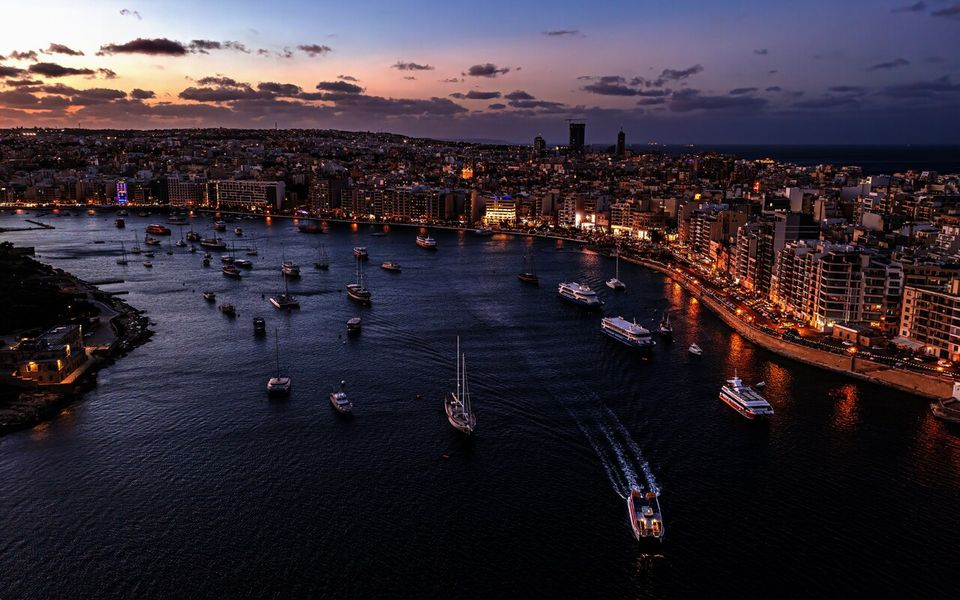
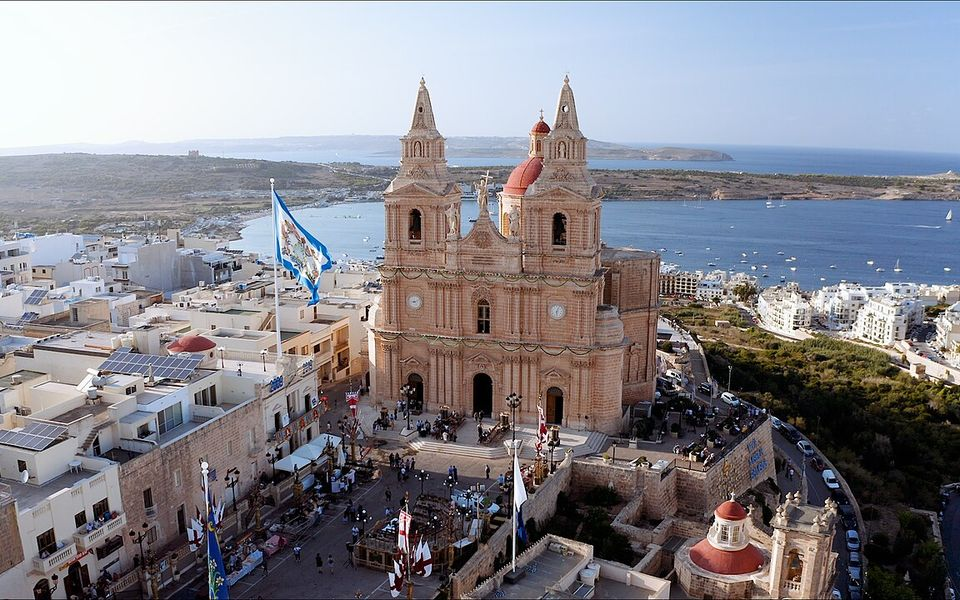
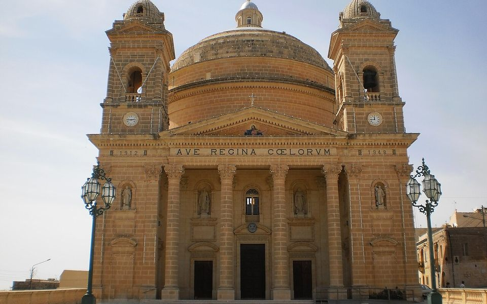

1
1Malta oggi · Blue consiglia · 22 novembre 2026
Tutte le stelle MICHELIN e i Bib Gourmand di Malta, in classifica
La Guida MICHELIN 2026 di Malta conferma tutti e sette i ristoranti stellati e aggiunge il quinto Bib Gourmand. Ecco tutti e dodici, dalle due stelle di ION Harbour ai migliori indirizzi qualità prezzo.
A cura di CompareMalta.ai

Foto: Richlv, CC BY-SA 4.0, Wikimedia Commons
La 7ª edizione della Guida MICHELIN Malta, pubblicata il 17 febbraio 2026, segnala 48 ristoranti. Tutte le stelle sono state confermate: un ristorante con due stelle e sei con una. La categoria Bib Gourmand, per una buona cucina a prezzi moderati, sale a cinque con Verbena a Mġarr.
Li abbiamo ordinati nel modo più semplice: prima le due stelle, poi una stella, poi i Bib Gourmand. MICHELIN non stila classifiche all'interno della stessa distinzione, quindi in ogni gruppo l'ordine è alfabetico.
Due Stelle MICHELIN
1Una Stella MICHELIN
 2
2 3
3Fernandõ Gastrotheque
Una piccola sala su due piani in una via tranquilla di Sliema, stellata dal 2023. Menu brevi e stagionali e una delle carte dei vini più serie dell'isola, con oltre 700 etichette.
Foto: Chris Olszewski, CC BY-SA 4.0, Wikimedia Commons

4 5
5Noni
Un menu degustazione rilassato sotto le volte in pietra di un antico forno sotterraneo nella capitale. Tra i primi stellati di Malta, con la stella dal debutto della guida nel 2020.
Foto: Txllxt TxllxT, CC BY-SA 4.0, Wikimedia Commons
 6
6Rosamì
Menu degustazione mediterranei di stagione in una villa storica sopra la baia di Balluta. Stellato dal 2024 e tra le cornici più romantiche della lista.
Foto: Diego Delso, CC BY-SA 4.0, Wikimedia Commons
 7
7Under Grain
La sala gourmet del gruppo Grain, sotto il livello della strada nel vecchio quartiere dei mercanti di La Valletta. Stellato dal 2020; il fratello Grain Street, al piano di sopra, ha un Bib Gourmand.
Foto: Frank Vincentz, CC BY-SA 3.0, Wikimedia Commons
Bib Gourmand: buona cucina, prezzi giusti
Il Bib Gourmand è il riconoscimento MICHELIN per una cucina di qualità a un buon prezzo. Sono i cinque indirizzi che consiglieremmo a un amico con un budget normale.
 8
8AYU
Tre fratelli cucinano piatti ispirati ai loro viaggi, di fronte a Manoel Island sul lungomare di Gżira. Informale e perfetto dopo una passeggiata.
Foto: Txllxt TxllxT, CC BY-SA 4.0, Wikimedia Commons

9 10
10Grain Street
Il bistrot informale del gruppo Grain in Merchants Street, con dehors. Piatti da condividere della stessa scuola dello stellato Under Grain, a una frazione del prezzo.
Foto: Godwin Borg, CC BY-SA 4.0, Wikimedia Commons
 11
11Rubino
Una piccola istituzione di La Valletta, nata nel 1906 come pasticceria, con le vetrine ancora piene di vasi e bottiglie d'epoca. Cucina maltese sincera, Bib Gourmand fin dalla prima guida.
Foto: Frank Vincentz, CC BY-SA 3.0, Wikimedia Commons

12Verbena
Nuovo ingresso del 2026. Cucina sincera e generosa con ingredienti freschi di fattoria nel tranquillo villaggio agricolo di Mġarr, a pochi minuti dalle spiagge del nord.
Foto: Medullaoblongata Projekt, CC BY-SA 4.0, Wikimedia Commons
Dove indicati, i prezzi seguono le fasce MICHELIN (€€ moderato, €€€€ occasione speciale). Menu e giorni di apertura cambiano spesso: verifica con ogni ristorante prima di prenotare. Per altre idee, vedi Ristoranti su CompareMalta.ai, aggiornati ogni settimana.
Fonti: MICHELIN press release, 17 Feb 2026 · Malta Tourism Authority · MICHELIN Guide Malta